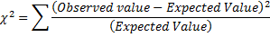
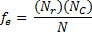
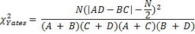
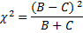
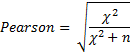
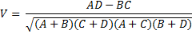
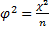
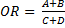
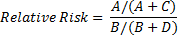

2x2 Table Analysis
2x2 Table Analysis command calculates following statistics for 2-by-2 contingency tables: chi-square, Yates-corrected chi-square, the Fisher Exact Test, Phi-Square, the McNemar Change Test and also indices relevant to various special kinds of 2-by-2 tables. The command can be used to summarize the relationship between several categorical variables, it is a categorical equivalent of the scatterplot used to analyze the relationship between two continuous variables [SRB].
A 2x2 table contains four cells with frequencies:
|
|
Observed - Yes |
Observed – No |
Total |
|
Test result - Yes (Positive) |
A True positive (TP) |
B False positive (FP) |
TP+FP |
|
Test result – no (Negative) |
C False negative (FN) |
D True negative (TN) |
FN+TN |
|
Marginal total for observations |
A+C |
B+D |
n = A+B+C+D Sample size |
How To
Run: Statistics→Nonparametric→ 2x2 Table Analysis (tabulated data).
Enter the A, B,C, D cell values.
o To tabulate raw data use the Cross-tabulation command.
Run the analysis.
Results
Chi-square – is a statistics used to examine the relationship between categorical variables. The contingency chi-square is based on the same principles as the ordinary chi-square analysis where expected vs. observed frequencies are being checked.

For 2x2 tables the expected value can be calculated as:

where Nr – is the total number of cases in the particular row or TP+FP, Nc – is the total number in the particular column or A+C, N is the number of A+B+C+D in the full sample.
Yates corrected Chi-square - is a correction made to explain the fact that both Pearson’s chi-square test and McNemar’s chi-square test are biased upwards for a 2 x 2 contingency table. It is defined as [YAC]:

McNemar Test – is applied to 2 by 2 contingency tables with a dichotomous trait, with matched pairs of subjects, to determine whether the row and column marginal frequencies are equal.
It is calculated as:

Pearson's coefficient of contingency is defined as following:

The coefficient varies between 0 (no relationship) and 1 (strong relationship) depending on a size of the table (for a 2 × 2 table the maximum value is 0.707). That’s why it should be used only to compare tables with the same sizes.
Cramer's (V) coefficient of contingency reflects the strength of the association in a contingency table and is calculated as:

This coefficient is a modified version of the Phi-square and varies between 0 (no relationship) and 1 (strong relationship).
Fisher corrected – is an alternative to the chi-square test if the total number of observations is less than 20. Also known as Fisher’s Exact Test.
Phi-square (mean square
contingency coefficient) – is a measure of association for two
binary variables and is defined as: 
Odds Ratio (OR)
– defined as 
Relative risk (RR). Together with odds ratio is the main measure of association in observational studies:

References
[YAC] Yates, F (1934). "Contingency table involving small numbers and the χ2 test". Supplement to the Journal of the Royal Statistical Society 1(2): 217–235
[SRB] Sokal, R. R., and F. J. Rohlf. (2012). Biometry: the principles and practice of statistics in biological
research. Fourth edition. W. H. Freeman, New York, New York, USA